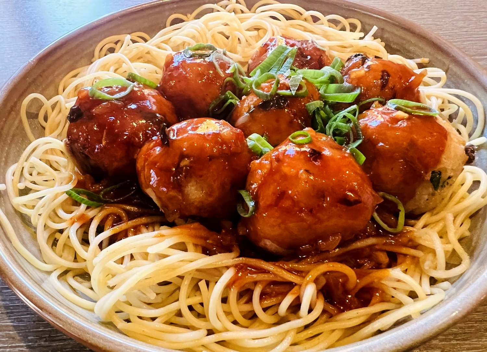
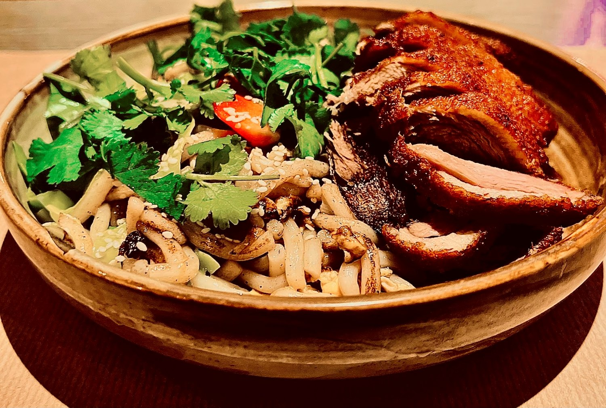
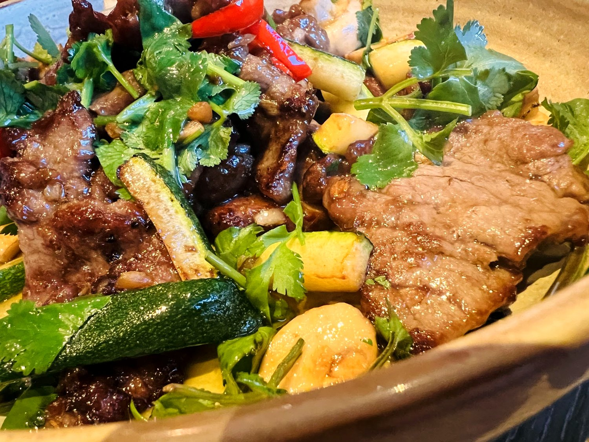
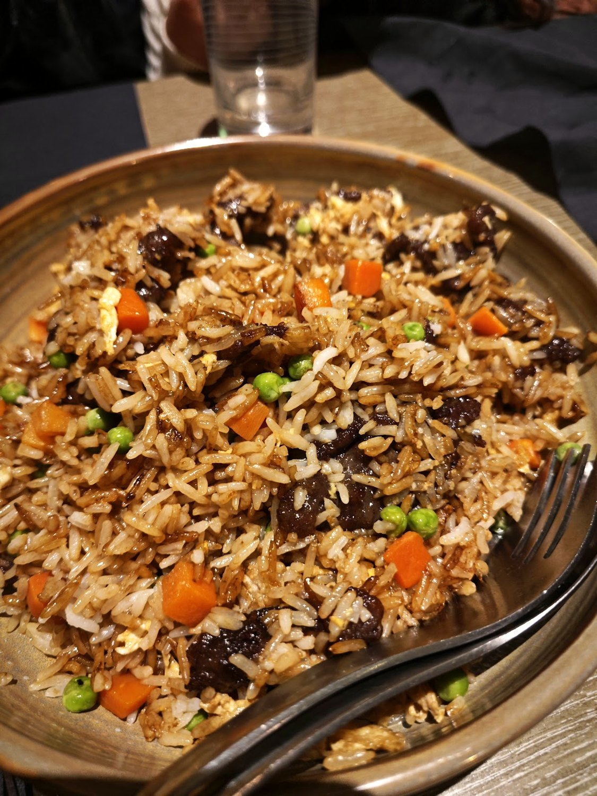
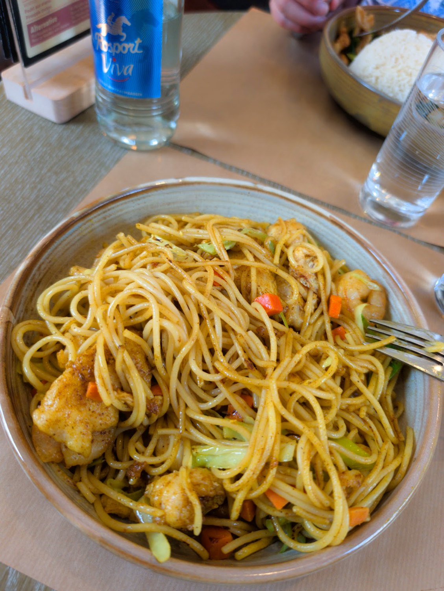
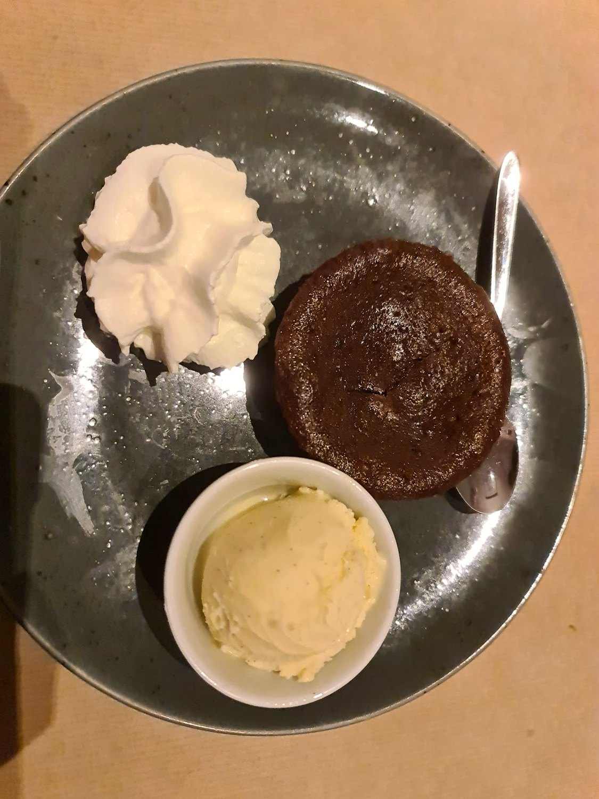
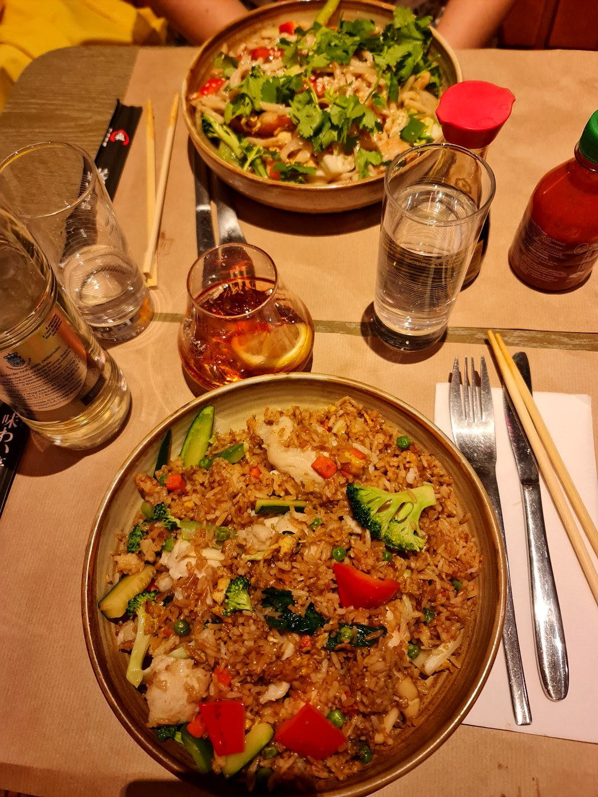
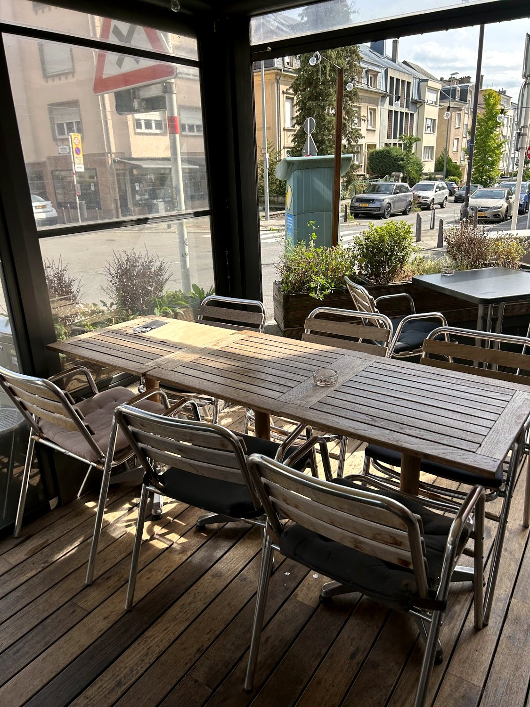

Mont St-Lambert
La cantine thaïe et chinoise du quartier — le wok, le canard croustillant, et une belle carte de bières.
Le canard,croustillant.
La peau laquée et croustillante, la chair fondante, des herbes fraîches et le riz à côté — le plat qu'on vient chercher.
C'est la maison dans un bol : le wok qui ne s'arrête pas, les parfums thaïs et chinois, et cette générosité tranquille d'un lieu qu'on connaît par cœur. On s'installe, on partage, on reste.

La signatureDu wok, généreux
Riz cantonais, nouilles sautées, nems croustillants, wok de bœuf et de légumes — la cuisine thaïe et chinoise qu'on partage, sans façon.






Ce qu'on sert
Le meilleur du wok thaï et chinois, les classiques de la maison — et le bar pour aller avec.
Pour commencer
Le wok
Les spécialités
Le bar
Plats d'après les photos publiques de la maison, à titre indicatif. Aucun prix n'est publié : la carte, les prix et la carte des bières sont à confirmer sur place.
Nous trouver
Horaires à confirmer
